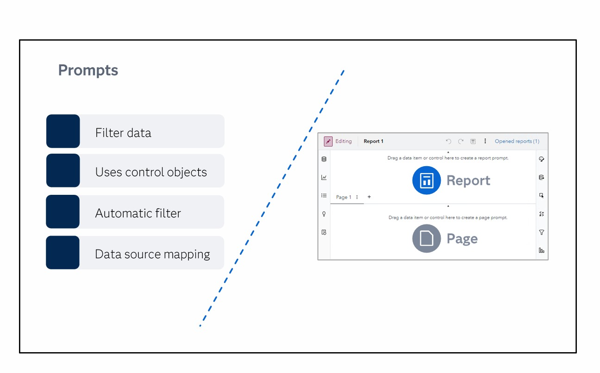

🎛️ Prompts — Dynamic Filters for Report Viewers ▶
From course: "Prompts can make your reports more versatile by enabling viewers to access the information that's important to them by filtering." Prompts are dynamic filters (vs static filters).
🔒 Static Filters
Set by designer at design time
Cannot be changed by viewer
Data Source, Basic, Advanced, Post-Agg, Common
"Static filters must be defined and applied by the report designer."
🎛️ Dynamic Filters (Prompts)
Used by viewer in view mode
Changeable — different values each time
Uses control objects (dropdown, slider, etc.)
"Prompts are control objects placed in a special area on the canvas."
📋 From the Course

🔑 The 4 Key Features of Prompts
🔍 Filter data
Prompts subset/filter what data objects display based on viewer selection.
🎮 Uses control objects
Dropdowns, sliders, button bars, date pickers, list controls, text inputs.
⚡ Automatic filter
If control uses same data source as objects, the filter applies automatically.
🔗 Data source mapping
If different data sources, you may need to map them when adding actions.
📊 Report Prompt vs 📄 Page Prompt
| Feature | 📊 Report Prompt | 📄 Page Prompt |
|---|---|---|
| Scope | Filters ALL objects in entire report | Filters objects on one page only |
| Includes? | Affects even page prompts | Only affects objects on that page |
| Location | Top of canvas (default) | Top of page (default) |
| Default state | Hidden — click chevron › to expand | Hidden — click chevron to expand |
| Placement options | Top, or left/right of canvas | Top of page, or left/right |
🎮 Control Objects Used by Prompts
| Control | Best Use | Data Type | Notes |
|---|---|---|---|
| Dropdown list | Select one value from many | Category | Common, simple choice |
| List control | Select multiple values, search | Category, Hierarchy | Only in prompt areas (left/right or inside prompt container) |
| Slider | Select value or range | Measure, Date | Dynamic min/max possible |
| Button bar | Toggle between few options | Category (low cardinality) | Space-saving for side panels |
| Text input | Free-text search | Category | Good for high-cardinality |
| Date picker | Select date range | Date/Datetime | Calendar interface |
• Report prompt = filters ALL objects in report, including page prompts ⚠️
• Page prompt = filters objects on ONE page only ✅
• Multiple controls → filters combined with AND operator ⚠️
• Prompt container = groups controls, delays action until Apply clicked ✅
• Cascading controls = selecting in one control filters options in the next ✅
• Auto control = drag data item → SAS picks best control based on type + cardinality ⚠️
• Hierarchy in prompt area = auto control per level + cascading filters ✅
• List control only in prompt areas (left/right or inside prompt container) ⚠️
• Prompt areas are hidden by default — expand via chevron ‹ ⚠️
• Required prompts + 2-way automatic filter = can get stuck ❌
Static = Set by designer
Prompts = Picked by viewer
Report = Really big scope (all pages)
Page = Page-only scope (one page)
"Static = Designer sets it. Prompt = Viewer picks it."